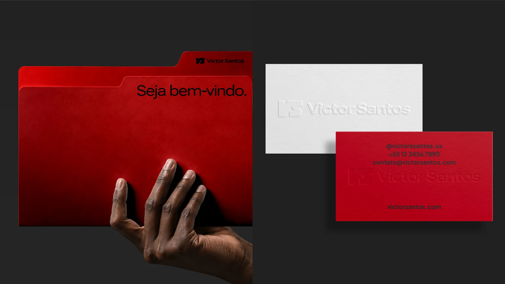

Branding para marcas diferentes, relevantes e desejadas.
 Filme manifesto · em breve
Filme manifesto · em breve

Filme manifesto

Somos um
estúdio de branding.
Somos movidos pelo desejo de criar legados que inspiram amor, esperança e autenticidade.
No Vale do Paraíba, SP, unimos estratégia de marca e criatividade para tornar sua marca única, relevante e desejada. Criamos posicionamento, nomes e identidades verbais e visuais que expressam a essência de cada negócio.
Serviços
Construímos marcas em três frentes: Estratégia1, Identidade verbal2 e Identidade visual3. Elas não são separadas, mas sucessivas: a estratégia, baseada em dados, estudos e pesquisas, dá origem a uma identidade verbal e visual que a traduz para o consumidor final.
Estratégia de marca1
- Pesquisa e diagnóstico
- Posicionamento e proposta de valor
- Missão, visão e valores
- Personalidade e arquétipos
Identidade verbal2
- Naming
- Manifesto
- Voz e tom de voz
- Slogan e frases
Identidade visual3
- Logotipo e variações
- Paleta de cores e tipografia
- Ilustrações e patterns
- Fotografia
- Brandbook e aplicações
Projetos selecionados

Entremeio
Identidade visual · Projeto conceitual
Ver projeto
Samuel Cipriano Studio
Estratégia, Identidade verbal e Identidade visual
Ver projeto
Let’s Dance
Estratégia e Identidade visual
Ver projeto
Victor Santos
Estratégia, Identidade verbal e Identidade visual
Ver projeto